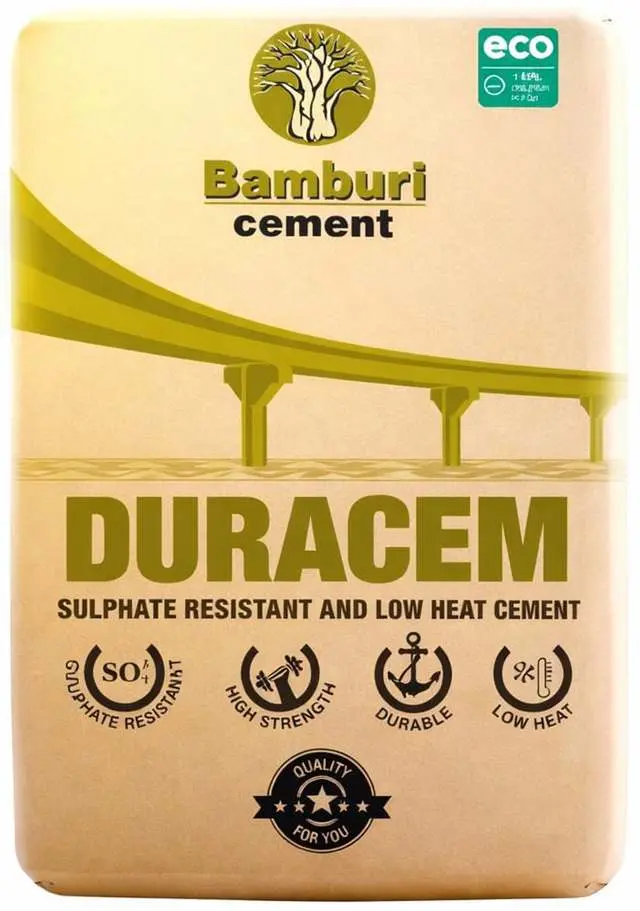

Bamburi Duracem is a premium sulphate-resistant cement designed for aggressive environments, concrete repairs, and sulfate resistance. Formulated to enhance longevity, it provides robust protection and increased resilience. Duracem is Bamburi's flagship eco-labelled product, reducing carbon emissions by 64% compared to Ordinary Portland Cement. Used in landmark projects including Makupa Bridge in Mombasa and Talanta Sports City.
Bamburi Duracem is a premium, eco-friendly 42.5 MPa cement explicitly engineered for superior sulfate resistance and low heat of hydration. It is the ideal choice for coastal environments, marine structures, and heavy infrastructure like bridges and foundations due to its high resistance to seawater chlorides and chemical attacks.
Key Benefits:
We deliver across Kenya to homes, construction sites, contractors, hardware stores and commercial developments.
Bamburi's DuraCem Cement is a specialized durable cement, designed for aggressive environments, concrete repairs, and sulfate resistance. Formulated to enhance longevity, it provides robust protection and increased resilience. Bamburi DuraCem Cement is known for its consistent quality and protective strength.
Engineered for superior sulfate resistance, protecting structures in aggressive environments and coastal areas.
Kenya's "greenest" cement with up to 64% lower CO
Minimizes thermal cracking in large pours and mass concrete projects, ensuring structural integrity.
Bamburi Duracem Cement is ideal for aggressive environments and specialized structural works. Use it for coastal and marine construction, water-retaining structures, bridges, and foundations in sulphate-rich soils
Competitive pricing for bulk and retail orders. Contact us for large project quotations.
| Quantity | Unit Price (KES) | Total (KES) |
|---|---|---|
| 1 - 50 bags | KSh 820 | KSh 820 - 41,000 |
| 51 - 200 bags | KSh 790 | KSh 40,290 - 158,000 |
| 201 - 500 bags | KSh 760 | KSh 152,760 - 380,000 |
| 500+ bags | KSh 730 | Call for quote |
i Prices subject to change. Contact us for the latest bulk pricing and delivery charges.
For optimal results with Bamburi DuraCem Cement, proper surface preparation is essential. Ensure the substrate is stable and cleaned. Remove any loose materials or existing damaged concrete. Eliminate contaminants like salts or chemicals using a wire brush or pressure wash. This prepares the surface for a strong bond, ensuring durable and lasting structural resilience.
Mixing DURACEM correctly ensures optimal workability and strength for sulfate-resistant applications. Use clean water and quality aggregates meeting standards, measured accurately with a bucket or wheelbarrow. Blend thoroughly until the mix is uniform in color, using minimal water to maintain strength and sulfate resistance. This ensures top performance for aggressive environment applications.
Applying DURACEM effectively maximizes its sulfate resistance and low heat benefits. Spread evenly, compact thoroughly, and finish smoothly for slabs, beams, or marine structures. Skilled users should follow mix designs and cure well to reduce cracking and porosity, ensuring durable, high-performance concrete in aggressive environments.
Safety and care optimize DURACEM's performance. Wear protective gear to prevent irritation, store cement dry on pallets, and use it first-in, first-out. Cure for 7 days to avoid cracks, use minimal water, and dispose of waste properly. These steps ensure safe handling and maintain its strength and sulfate-resistant properties for all projects.